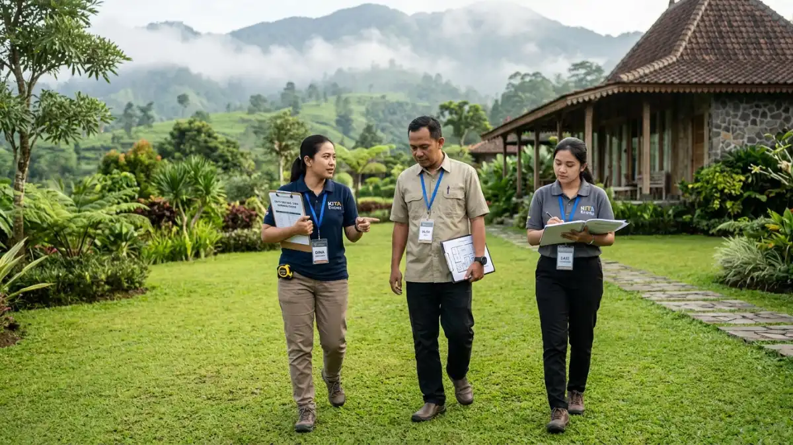
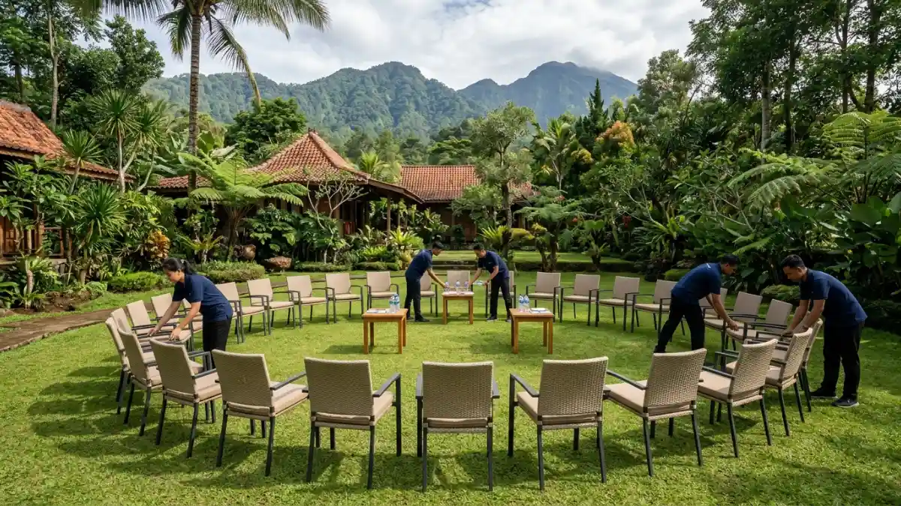

Ilustrasi Seseorang sedang melakukan survei venue meeting outdoor di Batu untuk memastikan fasilitas yang tepat.Cara memilih tempat meeting outdoor di Batu yang tepat adalah menyesuaikan kapasitas, akses, fasilitas, perlindungan cuaca, dan anggaran dengan tujuan serta jumlah peserta meeting.
- Bagaimana Menentukan Kebutuhan Meeting sebelum Mencari Venue?
- Bagaimana Menilai Kapasitas dan Tata Ruang Venue?
- Seberapa Penting Akses Jalan dan Waktu Kunjungan di Batu?
- Fasilitas Apa yang Wajib Dicek Saat Survei Lokasi?
- Bagaimana Mengantisipasi Cuaca dan Suhu Dingin di Batu?
- Bagaimana Memeriksa Reputasi dan Keamanan Venue?
- Pertanyaan Apa yang Perlu Diajukan kepada Pengelola Venue?
- Kesimpulan
- FAQ
Bagaimana Menentukan Kebutuhan Meeting sebelum Mencari Venue?
Kebutuhan meeting ditentukan dari tujuan acara, jumlah peserta, durasi, format sesi, dan anggaran, karena kelima hal tersebut membatasi pilihan venue di Batu.
Langkah pertama dalam memilih tempat meeting outdoor di Batu adalah menuliskan kebutuhan secara jelas. Tujuan acara menentukan format.
Rapat evaluasi membutuhkan meja dan layar, sedangkan sesi kreatif membutuhkan area lapang dan papan tulis.
Jumlah peserta menentukan kapasitas minimal, dan durasi menentukan perlu tidaknya konsumsi berat atau penginapan.
Buat dokumen kebutuhan satu halaman yang berisi tanggal utama dan alternatif, jumlah peserta pasti dan perkiraan maksimal, kebutuhan perangkat, serta batas anggaran.
Dokumen ini membuat setiap venue dinilai dengan tolok ukur yang sama, sehingga perbandingan menjadi adil.
Tanpa dokumen kebutuhan, panitia sering memilih venue berdasarkan tampilan foto, lalu baru menyadari kekurangan fasilitas setelah pembayaran uang muka dilakukan.
Bagaimana Menilai Kapasitas dan Tata Ruang Venue?
Kapasitas venue dinilai dari luas area efektif, bukan luas total lahan, dengan memperhitungkan tata letak kursi, panggung, meja registrasi, dan jalur konsumsi peserta.
Pengelola venue kerap menyebut kapasitas maksimum berdasarkan konfigurasi paling padat, misalnya berdiri atau duduk berbaris.
Meeting membutuhkan ruang lebih longgar. Kursi melingkar untuk diskusi memerlukan area lebih besar dibanding tata letak ala kelas.
Sisihkan pula ruang untuk panggung kecil, layar, meja registrasi, dan jalur berjalan.
Saat survei, minta pengelola menunjukkan titik yang akan dipakai, lalu bayangkan tata letak dengan jumlah peserta sebenarnya.
Perhatikan kontur tanah. Lahan miring atau berbatu menyulitkan penataan kursi dan dapat berisiko bagi peserta.
Tanyakan juga apakah area tersebut dipakai bersama pengunjung lain, karena hal itu memengaruhi privasi dan kebisingan.

Ilustrasi Tata kursi melingkar membutuhkan area yang lebih luas, pastikan kapasitas efektif venue memadai.Seberapa Penting Akses Jalan dan Waktu Kunjungan di Batu?
Akses jalan dan waktu kunjungan sangat penting di Batu karena kepadatan lalu lintas berubah menurut musim libur, akhir pekan, dan kondisi jalan menuju lokasi.
Kota Batu adalah destinasi wisata yang ramai. Data Disparta Kota Batu yang dilaporkan Malang Post mencatat triwulan III 2025 sebagai periode dengan kunjungan terendah, yaitu 1.826.689 wisatawan.
Artinya, arus wisatawan berubah cukup besar antar periode, dan jadwal meeting yang bertepatan dengan musim ramai berisiko menghadapi jalan padat.
Periksa jalur menuju venue. Beberapa lokasi berada di jalan sempit atau menanjak yang kurang nyaman untuk bus besar.
Tanyakan kepada pengelola apakah bus dapat masuk dan di mana lokasi parkirnya. Hitung waktu tempuh dari titik kumpul peserta dengan margin tambahan, lalu tetapkan jam mulai acara yang realistis agar peserta tidak terlambat.
Fasilitas Apa yang Wajib Dicek Saat Survei Lokasi?
Saat survei lokasi, periksa toilet, listrik, sinyal, tempat teduh, area parkir, dapur atau katering, dan ruang cadangan, lalu catat kondisi setiap fasilitas dengan foto.
Buat daftar periksa tertulis dan bawa saat survei. Cek jumlah dan kebersihan toilet, apakah air mengalir lancar, serta ketersediaan tempat cuci tangan.
Uji sinyal seluler di titik duduk peserta, bukan hanya di area penerimaan. Coba kecepatan Wi-Fi bila acara membutuhkan presentasi daring.
Pastikan stop kontak tersedia dekat titik presentasi dan tanyakan kapasitas dayanya. Lihat tempat teduh: apakah cukup untuk seluruh peserta jika matahari terik atau hujan turun.
Periksa area dapur atau akses katering agar konsumsi bisa disajikan tepat waktu. Terakhir, lihat ruang cadangan tertutup dan pastikan ruang tersebut memang tersedia untuk tanggal acara, bukan sekadar ada di lokasi.
Bagaimana Mengantisipasi Cuaca dan Suhu Dingin di Batu?
Cuaca di Batu dapat berubah cepat, sehingga venue meeting outdoor perlu memiliki atap atau tenda cadangan, jadwal fleksibel, dan opsi memindahkan sesi ke dalam ruangan.
Batu berada di dataran tinggi, sehingga pagi dan malam hari cenderung dingin, dan hujan dapat turun mendadak, terutama pada musim penghujan.
Tanyakan kepada pengelola bagaimana biasanya mereka menangani hujan: apakah tersedia tenda tambahan, gazebo tertutup, atau aula, dan berapa lama waktu yang dibutuhkan untuk memindahkan acara.
Atur jadwal dengan sesi inti pada jam yang umumnya lebih cerah, dan sisakan waktu longgar untuk perubahan.
Sampaikan kepada peserta agar membawa jaket. Bila acara memerlukan proyektor, pastikan ada pelindung dari cahaya dan hujan.
Sepakati sejak awal siapa yang berwenang memutuskan pemindahan lokasi sesi, agar keputusan bisa diambil cepat tanpa perdebatan.
Bagaimana Memeriksa Reputasi dan Keamanan Venue?
Reputasi venue diperiksa lewat ulasan terbaru, referensi klien sebelumnya, dan kunjungan langsung, sedangkan keamanan dinilai dari kondisi jalan, pagar, penerangan, dan prosedur darurat.
Baca ulasan terbaru di peta digital dan media sosial, dan perhatikan pola keluhan yang berulang, misalnya keterlambatan layanan, kebersihan, atau respons pengelola.
Minta kontak klien korporat yang pernah memakai venue tersebut untuk acara serupa, lalu tanyakan pengalaman mereka.
Untuk keamanan, periksa apakah jalur berjalan rata dan terang, apakah area tepi jurang atau kolam diberi pagar, dan apakah ada petugas jaga.
Tanyakan lokasi fasilitas kesehatan terdekat, ketersediaan kotak pertolongan pertama, dan jalur evakuasi.
Untuk kegiatan fisik seperti permainan kelompok, pastikan pemandu memahami prosedur keselamatan dan area permainan bebas benda tajam atau permukaan licin.
Pertanyaan Apa yang Perlu Diajukan kepada Pengelola Venue?
Ajukan pertanyaan tentang kapasitas maksimum, jam operasional, aturan suara, rencana hujan, kebijakan pembatalan, dan komponen harga agar tidak ada biaya atau batasan tersembunyi.
Tanyakan apakah venue dipakai bersama pengunjung lain pada tanggal acara, karena hal itu memengaruhi privasi.
Tanyakan batas jam penggunaan dan batas volume suara, terutama bila acara berlangsung sore hingga malam.
Tanyakan apakah peserta boleh membawa konsumsi atau perlengkapan dari luar.
Minta rincian tertulis mengenai apa saja yang termasuk dalam harga, syarat uang muka, batas waktu pelunasan, dan kebijakan pembatalan atau penjadwalan ulang.
Tanyakan pula apakah tersedia teknisi atau petugas lapangan yang dapat membantu pada hari acara. Simpan seluruh jawaban dalam dokumen tertulis.
Untuk memahami komponen harga lebih jauh, baca biaya meeting outdoor di Batu, dan untuk gambaran umum, buka panduan tempat meeting outdoor Batu Malang.
Kesimpulan
Menentukan tempat meeting outdoor yang tepat di Batu membutuhkan persiapan dan survei yang matang. Menyesuaikan kapasitas, akses, serta ketersediaan fasilitas dapat menghindari masalah teknis di hari-H.
Pastikan untuk selalu menyiapkan rencana cadangan untuk cuaca dan periksa reputasi venue agar acara dapat berjalan lancar.
FAQ